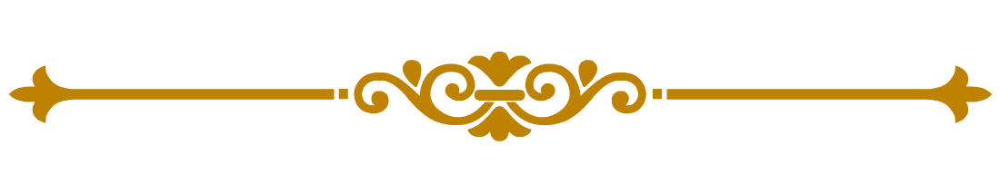

About
I am presently a PhD Candidate at the Bonachela lab at the Department of Ecology, Evolution & Natural Resources at Rutgers University, with my doctoral thesis work rooted in applying Theoretical and Computational Ecology to better quantify and expand our understanding of ecological systems in the Anthropocene, and to use this new-found knowledge to address pressing issues related to our ongoing ecological crises.
More specifically, I am currently investigating the interlinkages between landscape resilience, trophic interactions, spatial dynamics and climactic factors in the context of dryland ecosystems experience desertification. I utilise a variety of mathematical, computational and statistical tools to do so, including mechanistic mathematical models, theoretical analysis, machine learning techniques, remote sensing data analysis, and meta–analysis. For a more detailed overview of my research, please check out the Research page.
Prior to my PhD, I had completed my undergraduate and master's studies at the Indian Institute of Science Education and Research (IISER), Pune, alongside an MS Thesis Project in Theoretical Ecology, at the Center For Ecological Sciences, Indian Institute of Science, Bangalore.
Academic Qualifications
- Ph.D. in Ecology & Evolution, 2021 — : Rutgers University, NJ, USA
- M.S. in Biology, 2020 — 2021 : Indian Institute of Science Education & Research (IISER), Pune
- B.S. in Biology, 2016 — 2020 : Indian Institute of Science Education & Research (IISER), Pune
Contact
Please feel free to reach out below, always happy to connect!
Email: koustav.halder@rutgers.edu
Address:
Department of Ecology, Evolution, and Natural Resources, Rutgers University
14 College Farm Road, New Brunswick, NJ 08901, USA